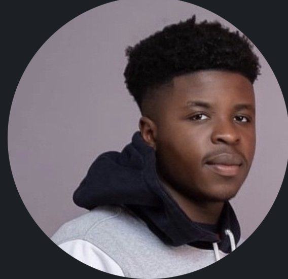

Lifted Joshua

Summary
I am a driven, adaptable, and energetic individual with a keen interest in
technology, seeking a role in a tech firm where I can leverage my academic
and professional training. As an outgoing team player, I excel in
collaborative environments. Additionally, I am highly dependable and
consistently motivated to complete tasks efficiently.
Education
-
2022 - 2026 University of Kent, B.Sc. Computer
Science.
-
2020 - 2022 St Thomas More Academy, Grades A – C in
Computer Science, Geography and English.
Work Experience
Skills
-
Guest Safety Enforcement: Implemented and maintained
rigorous safety procedures to ensure the well-being of all guests.
-
Problem-Solving: Enhanced ability to quickly identify
and resolve customer issues efficiently.
-
Team Collaboration: Worked effectively as part of a
team to achieve common goals and provide a seamless customer experience.
Awards and Certifications
-
Issuing Organization: International Customer Service
Association (ICSA)
Other